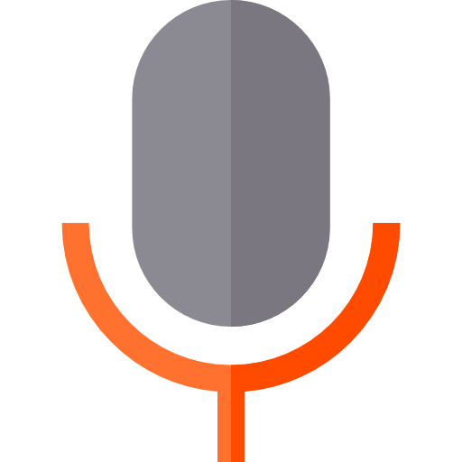

Audiolog


Settings
Audiolog is a platform that allows you to record audio, transcribe it, and summarize it in various ways easily and efficiently. To operate, it requires an OpenAI API Key, which will be stored locally on your computer.